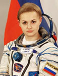

STATE ORGANIZATION
"GAGARIN RESEARCH AND TEST COSMONAUT
TRAINING CENTER"
"GAGARIN RESEARCH AND TEST COSMONAUT
TRAINING CENTER"
|
STATE ORGANIZATION "GAGARIN RESEARCH AND TEST COSMONAUT TRAINING CENTER" |
 |
Biographical Data |
||
Elena Olegovna Serova
Roskosmos Test Cosmonaut
PERSONAL DATA: Born April 22, 1976, in Vozdvizhenka, Ussurijsk Region of Primorsky Area, Russia.
EDUCATION: In March 2001 graduated from aerospace department of the Moscow Aviation Institute as a test engineer.
In 2003 graduated from the Moscow State Academy of instrument-making and information as an economist.
EXPERIENCE: Prior to selection to the Cosmonaut Corps Serova worked as a 2nd category engineer at the Energia Rocket Space Corporation and the MCC-Moscow.
COSMONAUT SELECTION DATE AND CLASS: On October 11, 2006, the Interdepartmental Board recommended that she be assigned to the Energia Rocket/Space Corporation Cosmonaut Corps as a cosmonaut candidate.
In February 2007 she started a two-year course of basic training for spaceflight.
In December 2006 by the order of the Ministry of Defense she was assigned to the GCTC Cosmonaut Corps as a test cosmonaut candidate.
On June 9, 2009, the Interdepartmental Board certified her as a test cosmonaut of the Energia Rocker and Space Corporation.
SCIENCE ACTIVITIES: Completed a postgraduate course at the Energia Rocket Space Corporation (extramural training).
CURRENT STATUS: Since 2011 Serova is a test cosmonaut of the Roscosmos Cosmonaut Corps.
JANUARY 2013